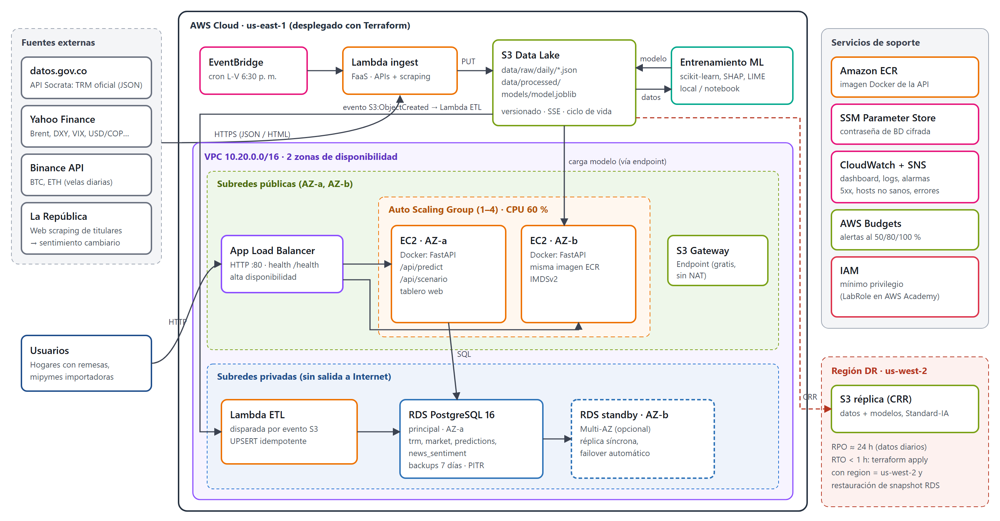
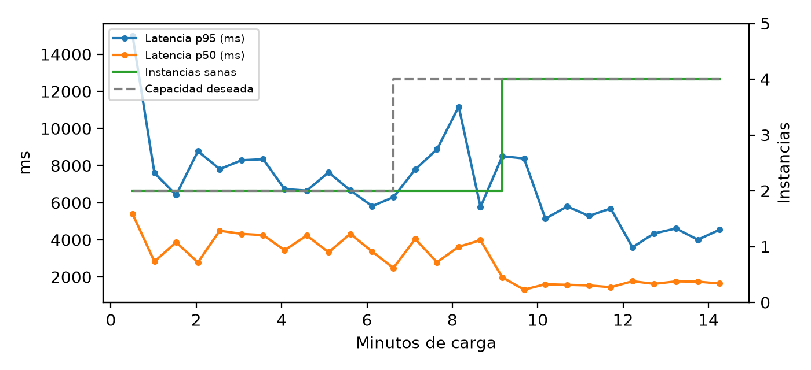
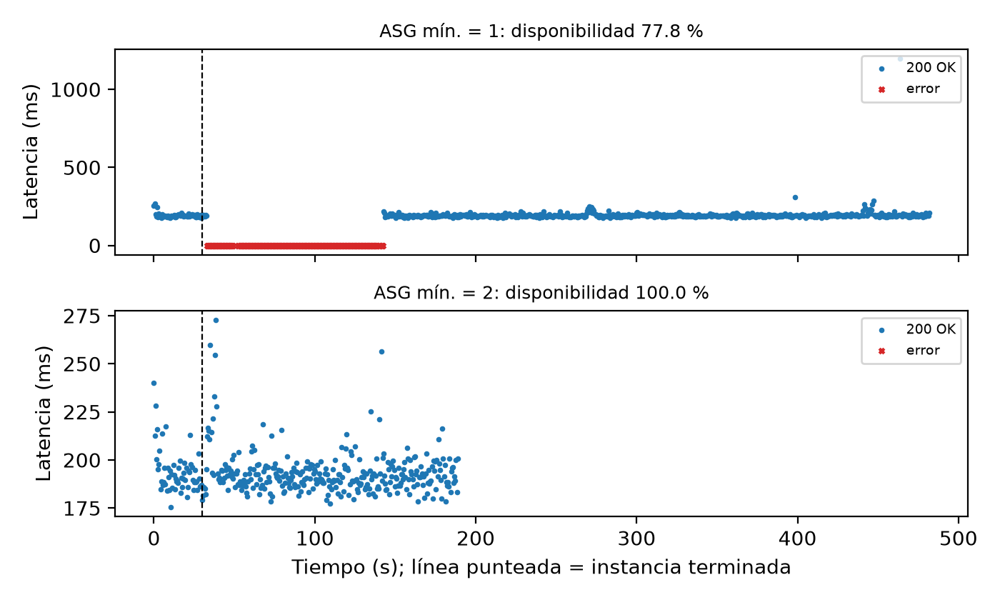

Proyecto integrador, V semestre. Universidad Santo Tomás, Tunja. Noviembre de 2026.
Repositorio: github.com/Sebas-409/proyecto-integrador-trm
Pusimos en AWS una página web que muestra la TRM, el pronóstico del modelo y el tipo de mercado del día. Los datos se actualizan solos todos los días. Toda la infraestructura está escrita en código con Terraform, así que se puede crear o borrar completa con un solo comando.
Dirección de la app: http://trm-predict-dev-alb-496593350.us-east-1.elb.amazonaws.com/

| Servicio | Para qué lo usamos |
|---|---|
| VPC (subredes públicas y privadas) | Red propia del proyecto. La base de datos queda en la parte privada, sin acceso desde internet. |
| EC2 + Auto Scaling | Servidores que corren la página. Si hay mucho tráfico se crean más; si uno se cae, se reemplaza solo. |
| Load Balancer (ALB) | Reparte las visitas entre los servidores y solo envía tráfico a los que están sanos. |
| ECR | Guarda la imagen Docker de la aplicación. |
| RDS PostgreSQL | Base de datos con la TRM y las predicciones. |
| S3 | Guarda los datos crudos y el modelo. Tiene versiones y una copia en otra región por si falla la principal. |
| Lambda + EventBridge | Dos funciones que corren solas cada día: una descarga los datos y otra los limpia y carga a la base. |
| CloudWatch + SNS | Tablero de métricas y 3 alarmas que avisan por correo (errores 5xx, servidores caídos, fallas al descargar datos). |
| SSM Parameter Store | Guarda contraseñas y claves fuera del código. |
| AWS Budgets | Avisa si el gasto pasa del 50 %, 80 % o 100 % de 30 USD. |
Mandamos visitas sin parar durante 14 minutos con 16 usuarios simultáneos: 4.543 peticiones, 0 errores. El Auto Scaling vio que la CPU subía y pasó de 2 a 4 servidores solo.

Apagamos a propósito un servidor mientras consultábamos la página cada segundo. Lo hicimos dos veces:
Por eso dejamos el Auto Scaling con mínimo 2 servidores, cada uno en una zona distinta.

| Escenario | Costo aproximado |
|---|---|
| Todo encendido 24/7 durante un mes | 63,6 USD/mes |
| Lo que cuesta el proyecto en el semestre (se enciende solo cuando se trabaja y en la sustentación) | ≈ 21 USD |
Lo más caro es el Load Balancer (17 USD), los 2 servidores (15 USD) y las IP públicas (15 USD). El detalle está en docs/costos.md.
/api/chat de nuestro servidor.RESULTADO_DESPLIEGUE
terraform destroy.